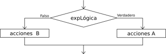

Condicional Si-Entonces

La secuencia de instrucciones ejecutadas por la instrucción Si-Entonces-Sino depende del valor de una condición lógica.
Si <condición>
Entonces
<instrucciones>
Sino
<instrucciones>
FinSi
Al ejecutarse esta instrucción, se evalúa la condición y se ejecutan las instrucciones que correspondan: las instrucciones que le siguen al Entonces si la condición es verdadera, o las instrucciones que le siguen al Sino si la condición es falsa. La condición debe ser una expresión lógica, que al ser evaluada retorna Verdadero o Falso.
La cláusula Entonces debe aparecer siempre, pero la cláusla Sino puede no estar. En ese caso, si la condición es falsa no se ejecuta ninguna instrucción y la ejecución del programa continúa con la instrucción siguiente.